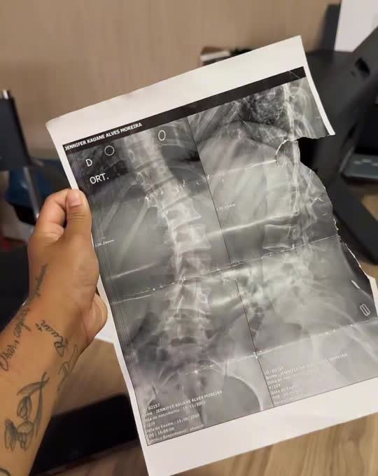
Reabilitação ortopédica
Recuperação de lesões musculares, tendinites, entorses e dores articulares.
AgendarFisioterapia ortopédica e esportiva
Um cuidado próximo, com avaliação detalhada e um plano feito para você voltar a fazer o que gosta, com leveza e segurança.
Onde dói
Toque na opção mais próxima do que você sente e veja como a fisioterapia pode ajudar.
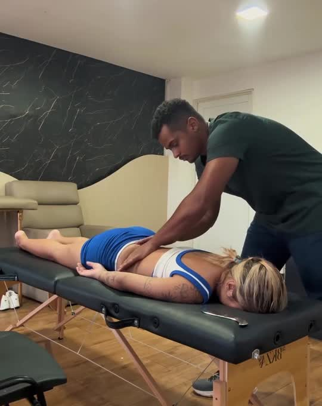
Dores lombares e cervicais, travamentos e desvios posturais como a escoliose. A avaliação mostra a origem da dor e o tratamento une alívio e fortalecimento.
Quero agendar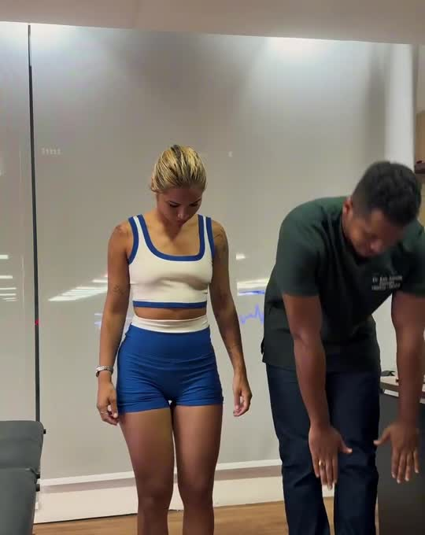
Entorses, dor ao subir escadas, tendinites e lesões ligamentares. O foco é reduzir a dor e devolver força e estabilidade para andar, correr e treinar.
Quero agendar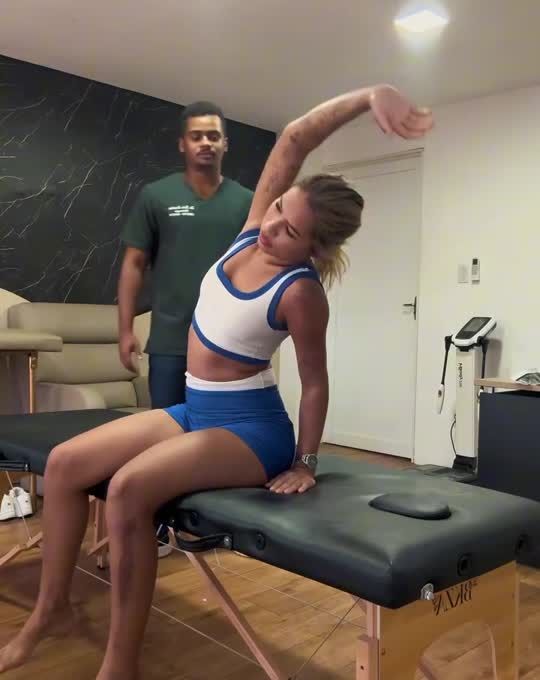
Dificuldade para levantar o braço, tendinites e perda de movimento. O tratamento recupera a amplitude e a força para as tarefas do dia a dia.
Quero agendar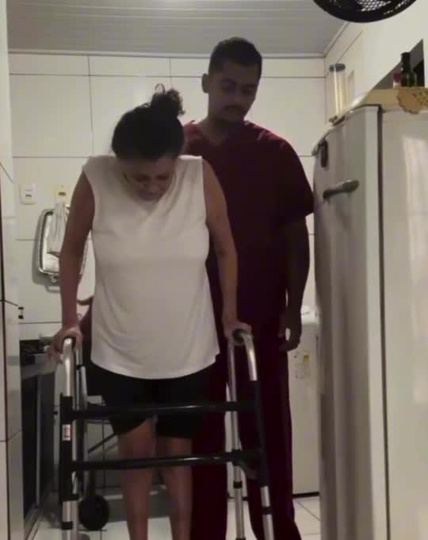
Acompanhamento após cirurgias ortopédicas e fraturas, inclusive com fixador: controle de dor e inchaço, ganho de movimento e treino de marcha até a independência.
Quero agendar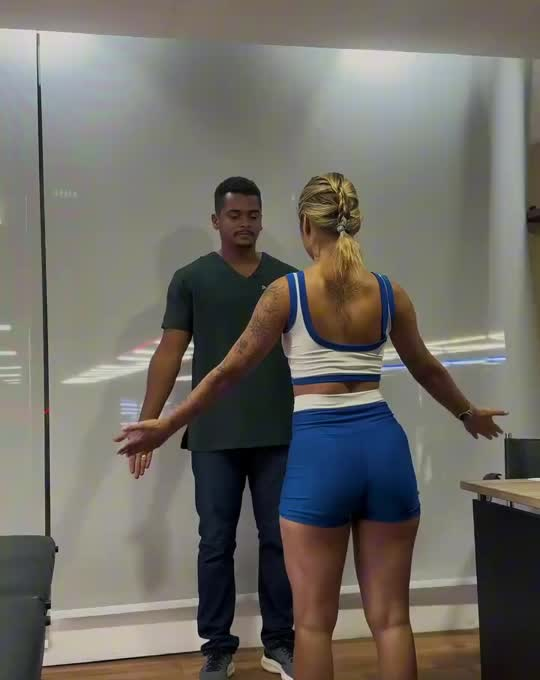
Distensões, entorses e dores que aparecem no treino. Tratamento da lesão e fortalecimento específico para voltar ao esporte com mais segurança.
Quero agendar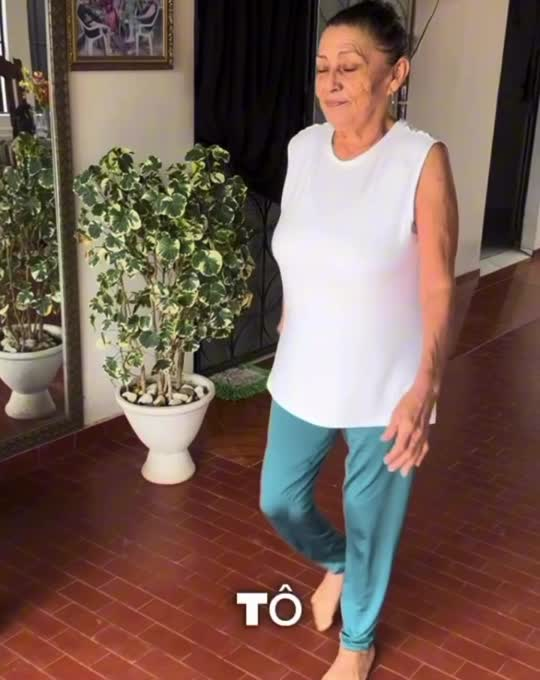
Para quem perdeu mobilidade, tem medo de cair ou está com dificuldade de sair de casa. A reabilitação pode acontecer no seu ambiente, treinando as atividades da rotina.
Quero agendarTratamentos
Cada plano combina os recursos certos para o seu caso. Conheça cada um deles.

Recuperação de lesões musculares, tendinites, entorses e dores articulares.
Agendar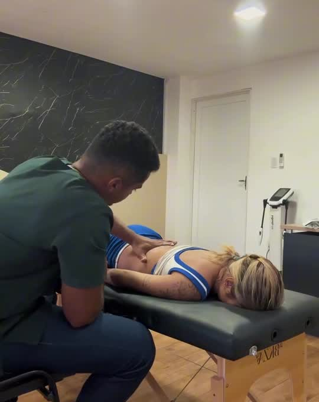
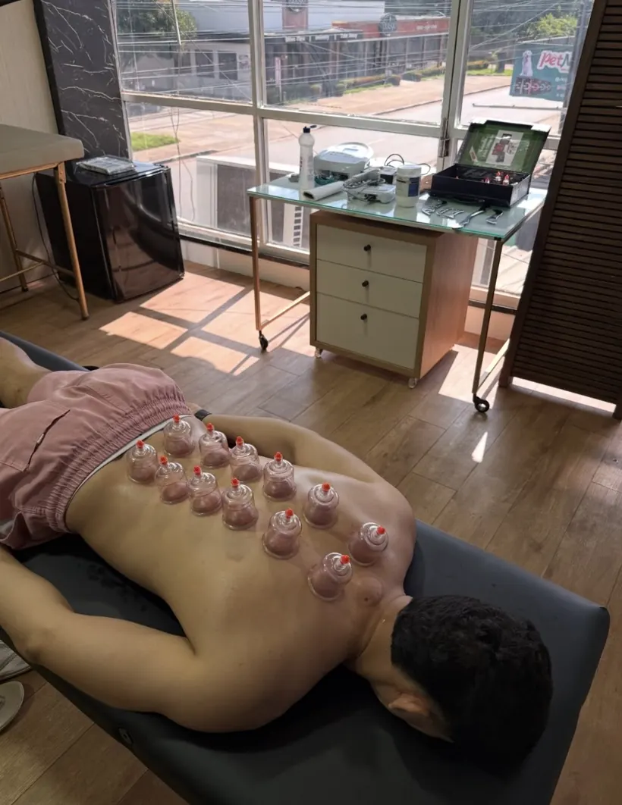
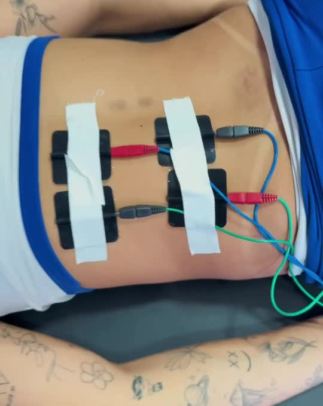
Passo a passo
Quatro etapas, do primeiro encontro à alta. Acompanhe a coluna se realinhando a cada fase.
Conversa sobre sua história, exames e rotina, seguida de testes de movimento, força e amplitude. É daqui que sai o diagnóstico fisioterapêutico.
Objetivos claros e técnicas escolhidas para o seu caso: terapia manual, eletroterapia, ventosaterapia e exercícios, na dose certa.
Cada sessão une alívio da dor e exercícios progressivos. Você entende o que está sendo feito e por quê.
Fortalecimento para voltar ao trabalho, ao treino e à rotina, com orientações para reduzir o risco de novas lesões.
Passe o cursor nas vértebras
Na prática
Um atendimento completo por dentro e a história de uma paciente que passou pelo fixador e voltou a caminhar.
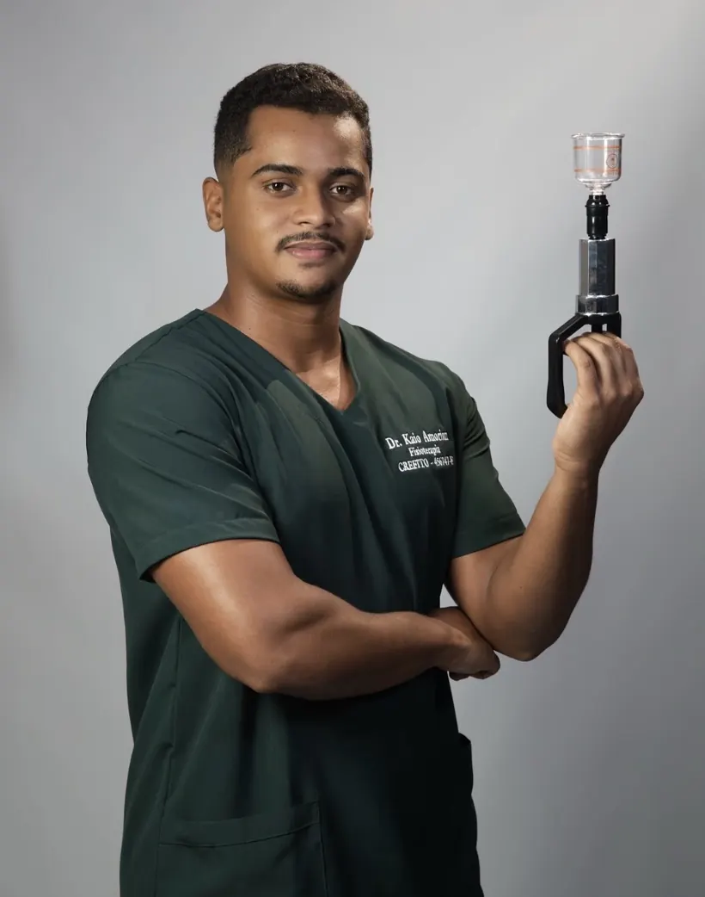
Sobre
Sou fisioterapeuta com foco em reabilitação ortopédica e esportiva. Meu trabalho é entender de onde vem a dor, tratar com as técnicas certas e devolver a você a confiança para se mover.
Atendo desde quem se machucou no treino até quem está se recuperando de cirurgia ou fratura, na clínica ou em casa, quando sair ainda é difícil.
Dúvidas
Não é obrigatório para fazer a avaliação fisioterapêutica. Se você tiver pedido médico, laudos ou exames de imagem, leve na primeira consulta: eles ajudam a montar o plano.
Uma avaliação completa: conversa sobre sua queixa e rotina, análise dos exames e testes de movimento, força e amplitude. Ao final você já sabe qual é o plano de tratamento.
Sim. O atendimento domiciliar é indicado no pós-operatório, em fraturas e para pessoas com mobilidade reduzida. Combine pelo WhatsApp a disponibilidade para a sua região.
Roupa confortável que permita movimentar a região tratada, além de exames, laudos e a lista dos medicamentos que você usa, se houver.
Pelo WhatsApp (95) 98117-1805. É só mandar uma mensagem contando o que você está sentindo.
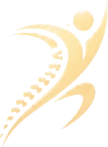
Agendamentos
Mande uma mensagem, conte o que está sentindo e marque sua avaliação.
Agendar pelo WhatsApp